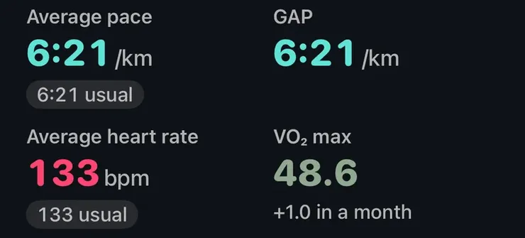

Ratgeber
Die Apple Watch misst deine VO2max nicht, sie schätzt sie. Die Schätzung, die Apple Cardiofitness nennt, beruht darauf, wie dein Puls beim Gehen, Laufen und Wandern im Freien auf das Tempo reagiert. In unabhängigen Labortests lag sie im Schnitt um etwa 13 bis 16 Prozent daneben, meist zu niedrig, und sie zeigt viel besser, ob du fitter wirst, als deinen genauen Wert. Was sie hebt, ist gleichmäßiges Ausdauertraining über Wochen bis Monate.
Was die VO2max überhaupt ist, erklärt die Notiz VO2max on a watch (auf Englisch). Dieser Ratgeber geht um die Zahl der Apple Watch selbst.
Im Labor wird die VO2max mit einer Maske gemessen, während du bis zur Erschöpfung läufst oder radelst, in Millilitern Sauerstoff pro Kilogramm Körpergewicht und Minute (ml/kg/min). Laut Apples Whitepaper vergleicht die Uhr stattdessen deinen Puls mit deiner Geschwindigkeit während eines Trainings Gehen im Freien, Laufen im Freien oder Wandern und rechnet aus dieser submaximalen Belastung hoch, wo deine Obergrenze läge, mit Alter, Geschlecht, Gewicht und Größe aus der Health-App.
Die Bedingungen sind streng. Das Gelände muss weitgehend flach sein (unter etwa 5 % Steigung oder Gefälle), GPS- und Pulssignal müssen gut sein, und du musst dich so anstrengen, dass dein Puls ungefähr ein Drittel des Wegs vom Ruhe- zum Maximalpuls steigt. Indoor-Trainings zählen nicht, das erste passende Training liefert noch keinen Wert, und laut Apple Support reichen die Schätzungen von 14 bis 65 ml/kg/min.
Ab 20 zeigt die Health-App, in welche Stufe deine Schätzung für dein Alter und Geschlecht fällt. Du kannst eine Mitteilung bei niedriger Cardiofitness aktivieren. Die Schwelle liegt von 20 bis 59 Jahren beim untersten Fünftel des FRIEND-Laborregisters, ab 60 bei 18 ml/kg/min für Männer und 15 für Frauen, und die Uhr meldet sich nur, wenn der Wert anhaltend niedrig ist.
Apple hat den Algorithmus an 221 Personen geprüft, deren Daten nicht in die Entwicklung eingeflossen waren. Der mittlere Fehler lag bei 1,4 ml/kg/min, mit einer Streuung von etwa 4,7 in beide Richtungen. Allerdings war Apples Referenz selbst aus submaximalen Labortests hochgerechnet, nicht aus einem Test bis zur Erschöpfung.
Die Uhr liest zu niedrig, aber sie steigt mit dir.
Unabhängige Studien mit Ausbelastungstests fanden größere Abweichungen. Caserman und Kollegen (2024) testeten 19 Erwachsene mit einer Apple Watch Series 7 gegen einen Labortest auf dem Fahrradergometer: Die Uhr lag im Mittel niedriger (41,4 gegenüber 45,9 ml/kg/min), wich im Schnitt um etwa 16 % ab und überschätzte eher weniger Fitte und unterschätzte sehr Fitte. Lambe und Kollegen (2025) testeten 28 Erwachsene, meist mit Series 9 und Ultra 2, gegen einen Laufbandtest: Die Uhr lag im Mittel 6,1 ml/kg/min zu niedrig, etwa 13 % daneben, und bei manchen um deutlich mehr als 10 Punkte.
Die Zahl kann also eine Stufe neben dem Laborwert landen. Verlassen kannst du dich auf deinen eigenen Verlauf, gespeist aus regelmäßigen Einheiten im Freien.
Apples Stufen stammen aus FRIEND, einem US-Register von Laufbandtests (Kaminsky und Kollegen, 2015). Der mittlere Wert (50. Perzentil) dort, in ml/kg/min:
Über der Mitte bist du fitter als die Hälfte der Getesteten deines Alters und Geschlechts, und im Register stehen Menschen, die sich testen ließen, nicht die ganze Bevölkerung. Weil die Uhr meist unter einem Laufbandtest liegt, kann ein Wert knapp unter der Mitte in Wirklichkeit dort liegen.
Apples Whitepaper nennt, was die Schätzung ungenauer macht:
Sie bewegt sich auch bauartbedingt langsam: Training verändert die VO2max über Wochen, und die Uhr aktualisiert nur aus passenden Trainings. Wenn du vor allem radelst, schwimmst oder Kraft trainierst, kann die Zahl lange stillstehen. Das ist eine Lücke in dem, was die Uhr sieht, kein Beweis, dass deine Fitness stehen geblieben ist.
Milanović und Kollegen (2015) fassten 28 kontrollierte Studien mit gesunden Erwachsenen zwischen 18 und 45 zusammen. Gegenüber Kontrollgruppen ohne Training hob kontinuierliches Ausdauertraining die VO2max um etwa 4,9 ml/kg/min und hochintensives Intervalltraining um etwa 5,5, die Intervalle also mit kleinem Vorsprung. Längere Programme brachten mehr.
Die VO2max wächst über Wochen und Monate, deshalb zählt Regelmäßigkeit mehr als eine große Woche.
Die Ausdauerfitness ist eines der stärkeren langfristigen Gesundheitssignale. Kodama und Kollegen (2009) fassten 33 Studien mit über 100.000 gesunden Erwachsenen zusammen: Jedes zusätzliche MET Fitness (3,5 ml/kg/min) ging mit etwa 13 % geringerer Gesamtsterblichkeit und 15 % weniger Herz-Kreislauf-Ereignissen einher. Mandsager und Kollegen (2018) begleiteten 122.007 Menschen nach Laufbandtests und fanden, dass höhere Fitness durchgehend mit geringerer Sterblichkeit einherging, ohne einen Punkt, an dem der Nutzen endete. Das sind Zusammenhänge in großen Gruppen, keine Prognose für einen Menschen, und ein großer Teil des Unterschieds liegt zwischen der am wenigsten fitten Gruppe und der nächsthöheren.

VO₂max bei einem LaufBei einem Lauf oder Gehen im Freien zeigt Aera die Schätzung, die Apple Health an diesem Tag gespeichert hat, und wie weit sie sich gegenüber dem Wert von etwa einem Monat davor bewegt hat.
Aera, für iPhone und Apple Watch
Aera liest die Cardiofitness-Schätzungen, die deine Apple Watch in Apple Health speichert, und misst sie an dir, nicht an einem einzelnen Tag. Auf dem Home-Bildschirm erscheint eine VO₂max-Kachel, wenn sich deine letzte Schätzung von deinem Üblichen der letzten sechs Wochen entfernt oder wenn du sie oft öffnest. Sie zeigt Typisch, Niedriger als üblich oder Auffällig niedrig (und dasselbe nach oben), und solange noch keine fünf Schätzungen vorliegen, steht dort Lernphase, statt zu raten. Gibt es erst wenige Schätzungen, sagt ihr Blatt, dass sich der Verlauf aus Trainings im Freien füllt.
Im Fitness-Tab zeigt Fortschritt unter Deine Fitness deine Ausdauerfitness im Vergleich dazu, wo du vor zwölf Wochen standest. Es wartet auf sechs Schätzungen, verteilt über mindestens vier Wochen, und nennt erst eine Veränderung ab 1,5 ml/kg/min Fitter oder Sinkt; alles Kleinere heißt Hält. Darunter ordnet eine Stufe von Niedrig bis Hoch deine Schätzung unter Menschen deines Alters und Geschlechts im FRIEND-Register ein, korrigiert dafür, dass die Uhr etwa 10 % unter einem Laufbandtest liegt. Der Field Guide erklärt jeden Schritt, auch warum die Stufe um ein Band danebenliegen kann und warum Steigungen, Hitze und Medikamente die Schätzung verwischen. Es gibt kein Konto, und deine Gesundheitswerte werden auf deinem iPhone berechnet. Diese Auswertungen sind kostenlos.
Aera ist kein Medizinprodukt.
Sie ist eine brauchbare Schätzung, keine Messung. In Apples eigener Validierung lag der durchschnittliche Fehler bei etwa 1,4 ml/kg/min, unabhängige Laborstudien fanden aber, dass die Uhr im Mittel 4 bis 6 ml/kg/min unter einem echten Test lag, bei einzelnen Personen auch deutlich mehr. Deinem eigenen Verlauf folgt sie besser, als sie einen Laborwert trifft.
Das hängt von Alter und Geschlecht ab. Im FRIEND-Register mit Laufbandtests liegt der mittlere Wert für Männer in den Zwanzigern bei etwa 48 ml/kg/min und für Frauen bei 38, in den Fünfzigern bei etwa 33 und 23. Die Apple Watch liest meist etwas niedriger als ein Laufbandtest, also nimm die Stufe in der Health-App als grobe Orientierung und deinen eigenen Verlauf als das eigentliche Signal.
Sie kann niedrig sein, oder sie wird unterschätzt. Hitze, Steigungen, schwaches GPS, getragene Last, Koffein, Flüssigkeitsmangel und ein falsch eingetragenes Alter, Gewicht oder eine falsche Größe in der Health-App können die Schätzung drücken. Herzfrequenzsenkende Medikamente schieben sie nach oben, wenn du sie in Health nicht einträgst. Die sauberste Schätzung liefern mehrere flache Geh- oder Laufeinheiten im Freien in gleichmäßigem Tempo.
Mit regelmäßigem Ausdauertraining über Wochen bis Monate. Eine Metaanalyse kontrollierter Studien fand, dass kontinuierliches Ausdauertraining die VO2max um etwa 4,9 ml/kg/min hob und Intervalltraining um etwa 5,5. Die meisten Wochen können aus gleichmäßigem, lockerem bis moderatem Cardio bestehen, dazu ein oder zwei härtere Intervalleinheiten, sobald die Grundlage steht.
Verwandte Notizen (auf Englisch): VO2max auf der Uhr · was Zone-2-Training ist · was Intervalle sind · warum Hitze den Puls hebt · was eine Consumer-Uhr nicht messen kann
Verwandter Ratgeber: Apple Watch HRV: Was ist normal, und warum ist meine zu niedrig?